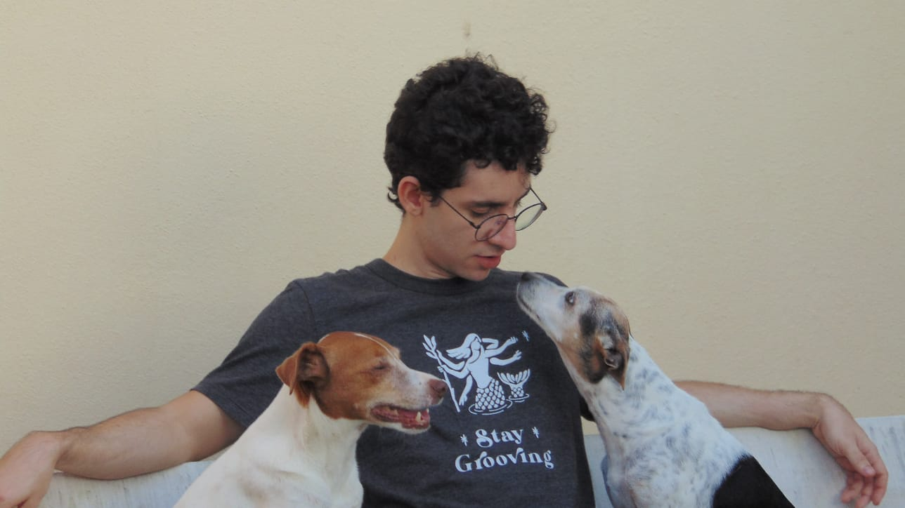
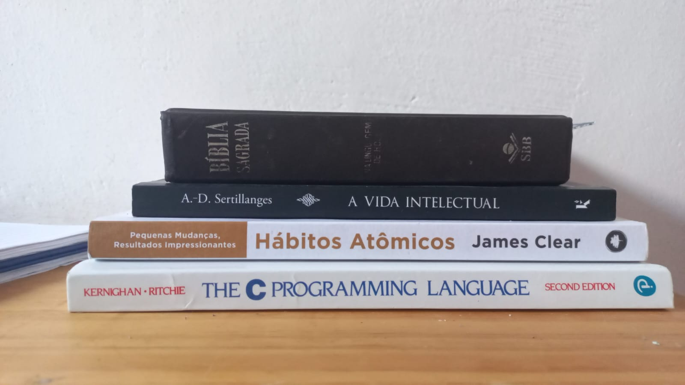
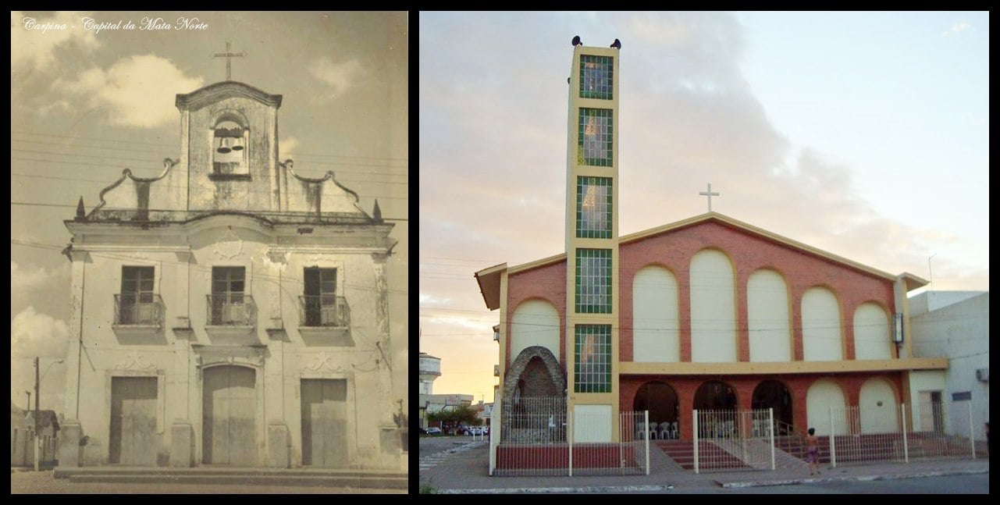

Sobre mim

Coisas que mais gosto de fazer:
1. Ler livros
|

|
Livros que estou lendo atualmente
- Bíblia (estou em levítico);
- Atomic Habits - James Clear;
- The C Programming Language - Kernighan & Ritchie;
- A vida intelectual do Pe. A.-D. Sertillanges;
|
2. Ir à Igreja
|

|
Paróquia de São José em Carpina
Vou à paróquia para as Santas missas e confissões.
|
3. Tempo com família
Dedicar tempo à família é essencial e estou buscando cada vez mais fortalecer os laços.
Assistir vídeos no Youtube
Alguns dos tópicos que assisto são:
- Cristianismo & história da Santa Igreja;
- Canal no Youtube do professor Guilherme Freire;
- Bodybuilding (me interesso pelo tema desde 2017);
- Programação na linguagem C;
- Web Hacking e CTF's (embora não esteja praticando muitos);
- Desenvolvimento pessoal;
- Boxe;
E por aí vai :)
Me exercitar
Exercicios como academia e andar de bicicleta.
Conversar com amigos
De preferencia presencialmente.
E de vez em quando jogar algo junto com eles.